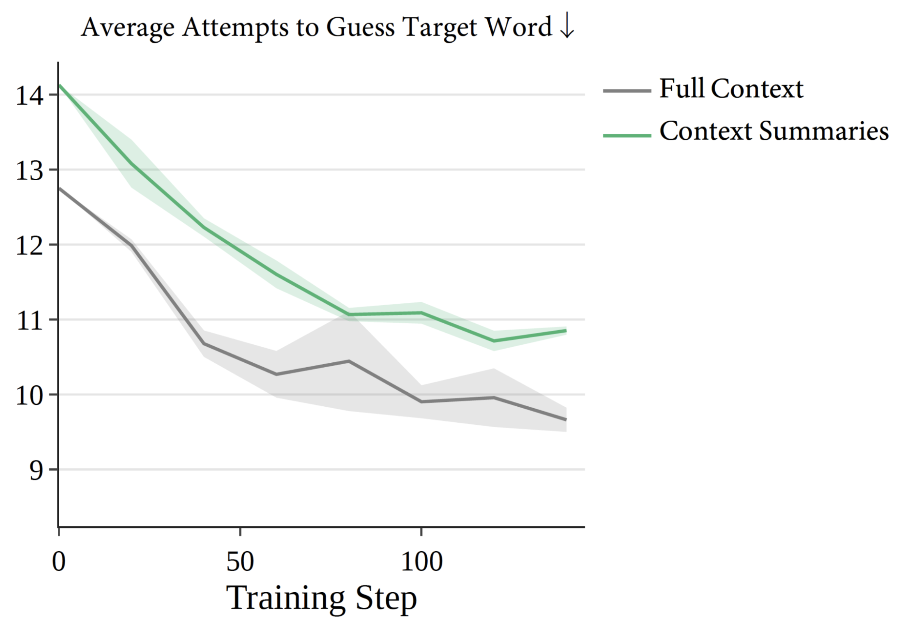
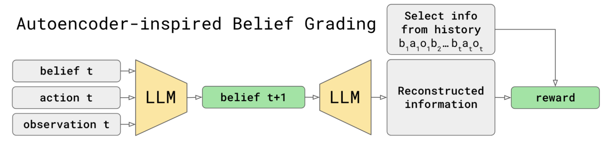
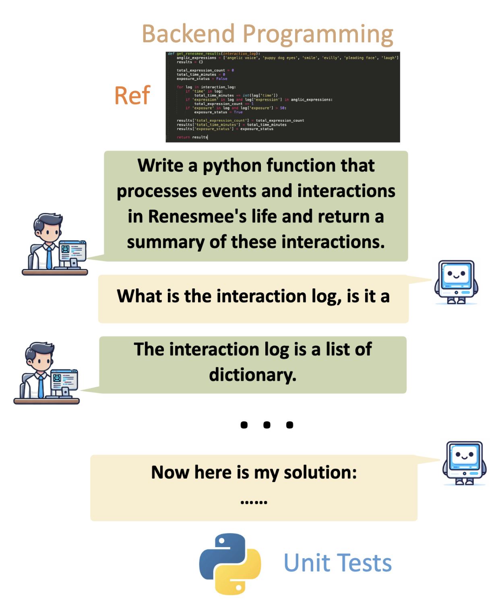
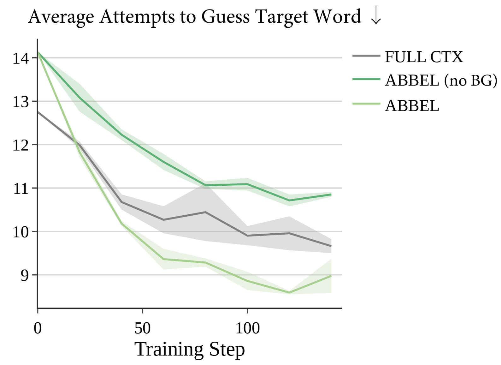
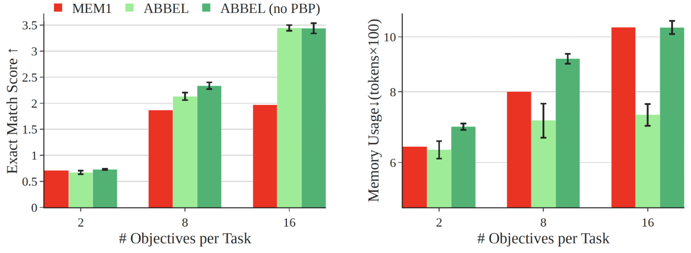

当任务周期拉长时，LLM的上下文无法无限扩展。自我总结能生成简洁可读的上下文，但在人类辅助领域性能损失明显。ABBEL将交互历史总结建模为信念状态更新问题，灵感来源于递归贝叶斯估计。 核心思想：显式分离信念生成与行动决策，通过信念分级直接监督信念质量。在CollabBench协作编码上，ABBEL将递归总结与全上下文之间的性能差距缩小约50%，训练步数减半。
大模型需要与人类在成百上千步内持续交互才能有效辅助复杂任务（如软件开发）。将完整交互历史保留在上下文中在实践中不可行。当前启发式方案是生成总结（摘要），有时称为上下文压缩。Cursor的Composer 2.5在训练中使用压缩提升性能；Grandcode：第一个在在线编程竞赛中持续击败所有人类参赛者的系统：尽管使用了Qwen 3.5-397B，仍发现必须使用上下文总结。

但压缩有一个问题。尽管在基准测试中差距看似微小，但Cursor等服务提供商仍建议用户在任务进行中避免使用压缩。在Combination Lock（类Wordle游戏，最多16次猜测）上，总结策略经过RL微调后表现提升，但从未缩小与全上下文策略的差距。根本原因： 让模型在完成任务的同时自我总结增加了学习问题的复杂性。虽然更多训练数据通常能解决，但现实交互中创建和使用高质量人类模拟器的困难使优质训练环境稀缺：必须在有限的、有噪音的多轮交互轨迹上学会更好的总结。
ABBEL将总结生成任务从行动决策中分离出来。受递归贝叶斯估计启发，将总结形式化为信念状态。模型定期基于新信息更新信念状态，形成类似递归贝叶斯估计的「先验信念→行动+观测→后验信念」的更新循环。
信念分级可以理解为添加一个辅助RL任务，使用启发式规则衡量什么是好的信念作为奖励。在编码领域好启发式规则难以定义时，使用通用自动编码启发的分级函数：当前语言模型 πθ 同时作为历史信息的编码器和解码器，信念状态作为编码后的码。信念b_{t+1} 的评分由其能否被 πθ 用来重建最新观测o_t决定。

信念分级可以用公式简洁表达。每个信念b_{t+1} 的评分依赖：更新后的信念b_{t+1}、最新观测o_t、刚执行的动作a_t、先验信念b_t、任务提示p_I和当前模型 πθ。更高的评分奖励保留决策所需信息的信念。 好启发式（编码中「越短越好但越能重建git diff越好」的平衡）和通用重建目标共同工作。
在CollabBench（来自Sweet-RL的人类驱动辅助编码环境）上验证信念分级的效用。Agent提出澄清问题，然后提交针对隐藏单元测试评分的函数。

使用通用重建信念分级函数（ABBEL-rec-BG），性能差距从全上下文缩小约50%，训练步数减半（50 vs 100）。 测试通过率0.48（vs全上下文0.52），成功率0.36（vs 0.39），峰值token 6.01×10²（vs 14.08×10²：不到一半）。无分级训练（no BG）效果差：测试通过率0.46，成功率0.31，峰值token 4.20×10²。
Combination Lock： 使用领域知识信念分级（计算历史统计信息并检查是否可从信念重建），ABBEL达到甚至超越全上下文模型：平均猜测次数更低、学习更快。而无分级的总结训练明显更慢。这说明当领域知识可用时，信念分级可以比全上下文更高效。

多目标问答（来自MEM1）： ABBEL证明了隔离信念状态与推理的价值。峰值信念长度惩罚（PBP）在处理更多目标时显著降低内存使用，且性能下降最小：与常见推理长度惩罚导致大幅性能损失不同。证明可以独立控制记忆容量和推理深度。

上下文压缩方法生成密集表示，牺牲人类可理解性。手工设计的总结提示和剪枝策略需要专家知识且不允许agent学习。将长上下文处理为外部存储供agent查询的方法与ABBEL互补：它们都受益于更好的总结训练。
显式信念状态作为信息瓶颈启发了更多可能性：基于信念效果奖励行动以引导探索、传输显式信念实现更好的agent间通信、甚至直接修改记忆以实现更好的用户可控性。未来更强的系统可能需要结合多种记忆形式：上下文作为工作记忆、其他方法用于短期和长期记忆。如何实例化这些记忆形式（测试时训练、适配器记忆、连续上下文记忆等）是一个激动人心的挑战。
参考：https://bair.berkeley.edu/blog/2026/07/26/abbel/